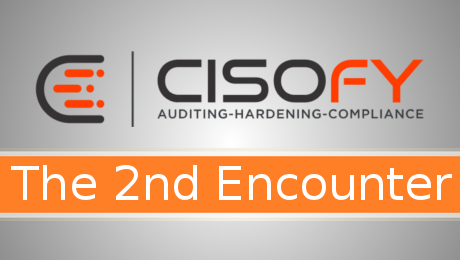
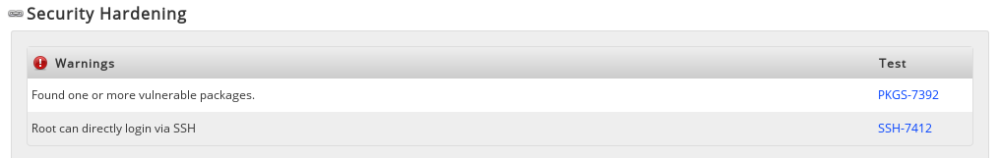

Lynis Enterprise - The 2nd Encounter

This time we will dive into compliance scans and take a look at how multiple hosts are displayed. I also want to find out why I am at risk of data loss - that's right, I still don't know!
This round, I'll take a look at the documentation, which can be found here.
RTFM if you can!
In order to get different results, I wanted to add another host. But, because around 9 days went by since I last touched Lynis, I couldn't remember how exactly the Enterprise key was added to a new host.
After searching and searching in the documentation, I found nothing but the information that the key is in the configuration panel. Great, but how do I add it? What's the secret option I need? I did check the config file, but there was no license key option to be found either.
Then I remembered, that I ran Lynis as root from the /root/ folder, so I checked the config file there. And to no surprise, there it was.
I should've checked this site though, since it's all there...
Anyway, putting this information in the documentation and a link to it in the configuration page would help a ton. Speaking of documentation, there are a few other things that I came across, such as the icon description being a little off
and topics that are linked in the documentation or application but lead to nowhere.

Parts of the documentation just don't seem to exist at all, while others at least have the decency to tell you so!
Adding other hosts
But enough about the docs, I wanted to add three more hosts so I have two 14.04 and two 12.04, which I could then scan with either the --check-all or the --pentest switch, to get an idea of how they impact the scan results. Also, this should give us a bit more then just "21 Suggestions" and might be more representative of what version is actually being used out there, with companies not always running the latest shit and all.
I want to see criticals and a red cross at compliance!
To get an overview, here are the hosts with their OS versions.
test-ossec-lynis01 Ubuntu 14.04 audit system --check-all
test-ossec-lynis02 Ubuntu 14.04 audit system --pentest
test-ossec-lynis03 Ubuntu 12.04 audit system --check-all
test-ossec-lynis04 Ubuntu 12.04 audit system --pentest
After copying the lynis folder with the enterprise key to the other hosts, I ran the commands, to add the hosts to the enterprise web UI.
One thing I noticed, is that the Ubuntu 12.04 hosts didn't show up in the UI after the scan completed. The culprit here was that the curl package wasn't installed on these hosts.
After running apt-get install curl -y and running the scans again, they where listed with the other hosts.
Two things stick out here, one is that the Ubuntu 12.04 version string is empty. The other is the bandage sign in the Lynis version column. Hovering over it says "This version is outdated and needs an update". This being in the Lynis version column, I assume it's referring to the Lynis binary needing an update, which is strange since I rsynced the folder from the test-ossec-lynis01 host and should therefore be the same.
test-ossec-lynis03.prod.lan:~/lynis $ sudo ./lynis --check-update
== Lynis ==
Version : 2.1.0
Status : Up-to-date
Release date : 16 April 2015
Update location : https://cisofy.com
Copyright 2007-2015 - CISOfy, https://cisofy.com
Yup, it's the current version alright. Ideas? Ignore, for now at least.
Let's check out the findings instead.
According to the dashboard, we now are at risk of system intrusion, which is never a good thing!
Since I took a quick look after the host test-ossec-lynis03 was added, I know that that's where the problem was first found.

So what do we have here? Great, "one or more vulnerable packages", I wonder which packages are vulnerable.
Wait, what? That is one way to make a great design around no additional information whatsoever. I understand that I should update my system, but as a technical person I would love to be able to understand what exactly the threat is and where it has its source. Maybe this host is running under certain circumstances that make upgrades hard. In this case, I might want to check if an upgrade is really necessary.
Note: I'm not saying that I'm a fan of the above scenario, but it does happen sometimes - unfortunately!
Since I can't do much more then upgrading my server, let's just continue with the other hosts.
The older hosts have the highest risk rating, no surprise there. But they didn't introduce new risks, which is interesting. I know that 12.04 still receives security updates, but I'm pretty sure that they're not running the latest versions.
Fun fact, some problems solve themselves, such as the "Old Lynis version" one.

Let's checkout one of the 12.04 hosts and see what they have to offer. Apparently there isn't much difference between the --check-all and --pentest checks, since the results are the same, at least when it comes to number of findings.

I won't show the rest of the results as it's pretty much the same as the first scan results. Obviously, we have the "vulnerable packages" finding and again I would love to know which packages are vulnerable, but it just shows the same page as before.
Just out of curiosity, let's check real quick which packages are listed for security updates.
$ grep security /etc/apt/sources.list |sudo tee /tmp/security-updates-only.list
$ sudo apt-get dist-upgrade -o Dir::Etc::SourceList=/tmp/security-updates-only.list
As you can see, there is definitely a difference between the two hosts, even if it's not a substantial as I would have thought. Still though, in a production environment, hosts are not all the same and having information on what exactly causes a problem goes a long way towards improving things.
They should all be updated, since these are all security updates, but I would still love to know which of them is responsible for the "system intrusion" risk.
Compliance
I'm still compliant with running not compliance checks, so let's fix that next.
It seems that policies are changed in the web interface, not via cli switches. This begs the question how the command is initiated, but let's try to run a scan with compliance first.
I think "High Secure" should be enough, but ultimately I want to check all of the predefined policies.
To check for compliancy, I need to run the rule checker.
So my system is not compliant after all. Since it was that easy, I ran a quick check over all rule sets.
Turns out it doesn't make that big a difference. Let's examine the findings one by one.
Firewall is pretty obvious, it's installed and running. Since this host is actually just a Linux container (LXC), the detected firewall is the host IPTables rule set.
Time synchronization is configured, is more of a general information than anything else. Is the configuration compliant with the defined rule sets? Should it not be configured? Why isn't it marked with a cross or checkmark?
Clicking on the link just shows the rule definition but no further information on the findings.
For the record, neither NTPd nor timed are running on the host, so the checks have probably failed. If it's not a compliance issue, why is it listed at all?
Malware includes a check if an anti malware tool (clamd) is installed and, apparently, if it's configuration is protected.
This is probably a variable that Lynis sets after a certain check. What I'm wondering is how this could have gone off, since clamd isn't even installed.
Limited access to compiler seems to check if a compiler is installed!?
Compliant: check! I'm still compliant, at least according to the dashboard and the hosts overview. Even after running Lynis again - no change!
So what exactly do compliance checks look for?
$ sudo apt-get install clamav
$ sudo /etc/init.d/clamav-freshclam start
$ ps aux |grep clam
clamav 1915 5.0 0.0 52364 2908 ? Ss 15:47 0:06 /usr/bin/freshclam -d --quiet
$ sudo ./lynis audit system -c --quick --upload
Seems like it worked!
The compliance check shows a read cross, let's see what the UI has to say about the updated status.
What? OK, this doesn't make sense.
There is no change in the result, whatsoever. And just for the record, here are the config permissions.
test-ossec-lynis03.prod.lan:~/lynis $ ls -lh /etc/clamav/
-rw-r--r-- 1 root root 2.0K clamd.conf
-r--r--r-- 1 clamav adm 717 freshclam.conf
drwxr-xr-x 2 root root 4.0K onerrorexecute.d
drwxr-xr-x 2 root root 4.0K onupdateexecute.d
Only root is able to write and the config belongs to clamav. Seems reasonable to me.
Taking a closer look at the policies, I found that some of them are empty and don't have any rules set. That would explain why so few results showed up in the overview page.
While this makes sense, since it's hard to check for, let's say, every possible backup service that could be in place, it's also kind of misleading since the policies are named after "HIPAA", "ISO27x" and "PCI-DSS". Anyone getting a checkmark on these should check the rule tables before the auditor shows up!
I'm not an expert in compliance, but I'm pretty sure that each of them has more then 8 things that should be done properly, before you can pat yourself on the shoulder!
Summary
So what have we learned?
- The documentation is lacking in some parts
- Results could be more detailed, especially regarding the source of the problem
- I still don't know what puts me at risk of dataloss
- Now I also don't know which packet puts me at risk of system intrusion
- I also don't know how likely the exploitation of said risks is (linkt to CVSS?)
- I havent' seen a "mark as false positive" or "ignore because can't be fixed" option.
All in all there is a lot of time that has to go into writing rules before Lynis Enterprise can really be used for compliance checks. On one hand I love it, as it forces people to create checks that fit their environment, on the other hand it would be great to have a ISO27001 rule set premade for some distros - say Ubuntu - to run a quick check and see how the host is holding up.
What really stopped me from "digging deeper", is that I wasn't able to figure out how the checks actually worked. I get that "malware running" is marked as compliant, if the "process running" variable contains "clamd", but what is Lynis, the cli tool actually checking for and more importantly, how can I check the content of "process running" myself? I know it's a OSS tool and I could look at the source code, but that's not how I want to use my time - and your boss wouldn't want you to use yours that way as well. Especially after he payed for the license.
What I'm getting at is, that as newcomer to Lynis, it's sometimes hard to understand what exactly is being done in the background and how some results came to be.
I'm looking forward to my next encounter, as I still have to
- write my own compliance rules
- check out historical data, after I fixed and unfixed stuff
- and most of all, find out if LE can actually be of use to the average pentester.
Also, what's up with that?
I did everything imaginable to get this to show a red cross - without any luck!